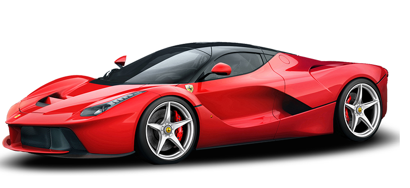
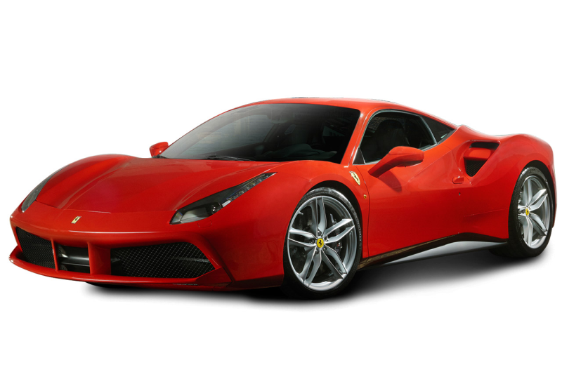
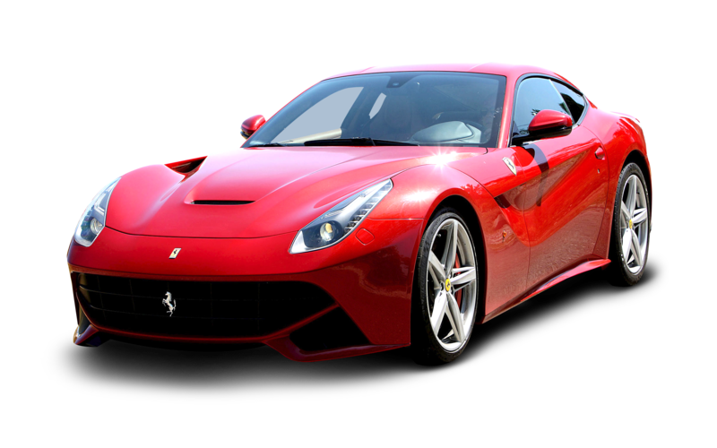

LaFerrari
LaFerrari (также известен как Ferrari F70/F150) — гибридный гиперкар итальянской фирмы Ferrari, первый серийный гибридный автомобиль компании. Выпущен ограниченной серией в 2013 году. Свои намерения выпустить преемника знаменитого Ferrari Enzo фирма впервые высказала ещё в марте 2007 года. В сентябре стала известна примерная цена и мощность автомобиля. В конце 2009 года компания снова опубликовала данные о суперкаре, в 2010 также напомнив о желании запустить в серию нового флагмана.
488 GTB
Ferrari 488 GTB (Tipo F142M) — спортивный автомобиль, выпускающийся с 2015 года. Был представлен в феврале 2015 году в Маранелло, а его дебют состоялся в марте на Женевском автосалоне. Является заменой 458 Italia, но имеет ряд конструктивных особенностей, в том числе были внесены небольшие изменения в шасси (для сравнения, автомобиль имеет 80% новых частей).[2] GTB - аббревиатура GranTurismo Berlinetta, а открытая версия носит приставку 488 Spider. Предположительная стоимость ожидается от ~ $280000. Спустя 4 года , в свет вышла версия Pista . Авто получил существенно доработанную аэродинамику и улучшение внутренней части . Двигатель стал выдавать 720 лошадинных сил.
F12 Berlinetta
Ferrari F12berlinetta (также называется F12 Berlinetta) — гран туризмо с передним расположением двигателя и задним приводом от итальянского производителя спортивных автомобилей Ferrari. F12berlinetta впервые представили в 2012 году на Женевском автосалоне. В модельном ряду среди автомобилей гран туризмо заменил Ferrari 599 серии.